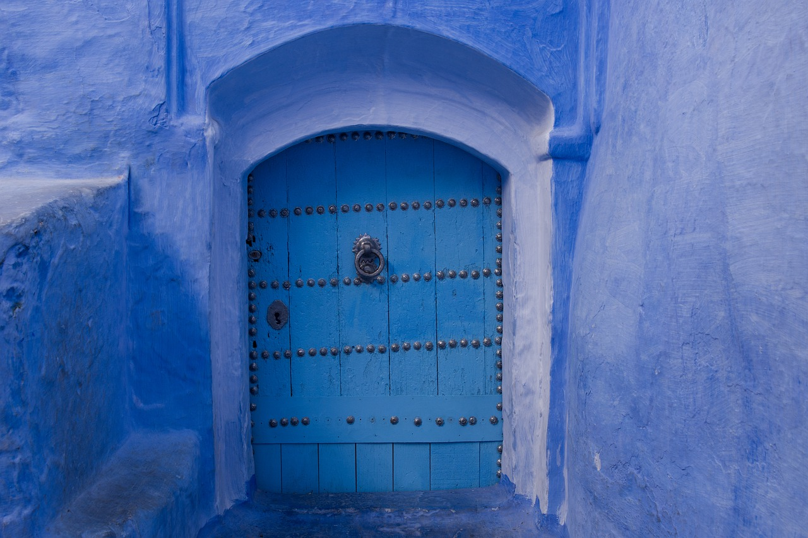

编辑：只是个小芝麻作者：芝麻
45031游览

虽然钻出被窝变得越来越困难,但冬天可做的事、可吃的东西、可过的节那真是一点也不少。
虽然冬天冻得人耳朵通红，但-想到糖葫芦、糖炒栗子和麻辣烫,立马心里觉得暖呼呼的;
虽然冬天冷的让人不想动,但是只要一想到暖乎 乎的太阳、街上热闹的景象,就又有了出门]的动力;
虽然冬天冷的让人不想把手拿出兜里,但一想到冬天的各色美景,摄影师们就再也忍不住了....
今天,小爱摄影从小爱网中精选了众多“冬味十足”的照片,让我们一起在寒冷的冬日照片中找到“火一样的生活热情~

在拍摄这张作品时，零下30度，6-7级的白毛风挂得人站不住脚。眼前的场景，让我联想到后天了场景。联想到流浪地球里的场景。
远处的人物，可能是刚从地下世界回到地面寻找食物的勇者。
去年这个时候拍的雪原晨曦，虽然冻得手脚冰凉，但人是兴奋的!看着太阳慢慢从白茫茫的雪原升起，慢慢的色彩开始变化，眼前的景象犹如仙境!